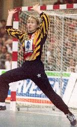

![[Hjem]](img/vmikon.gif)
Det blir internasjonal topphåndball på TV 2 i hele tolv dager. Christine
Espeland og Gunnar Pettersen kommenterer kampene, som sendes fra Østerrike og
Ungarn.
Torsdag 14.12 kl. 18.00: Kvartfinale (direkte)
Fredag 15.12 kl. 17.00: Semifinale (direkte)
kl. 19.30: Semifinale (direkte)
Lørdag 16.12 kl. 19.00: Bronsefinale (direkte)
Søndag 17.12 kl. 14.45: Finale (direkte)
 av Schibsted Nett AS.
Copyright © 1995.
av Schibsted Nett AS.
Copyright © 1995.